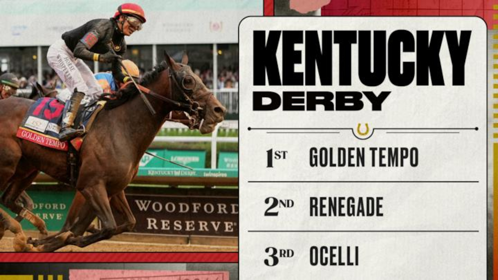

Cherie DeVaux mide a Golden Tempo en Keeneland con el Belmont Stakes en el horizonte
La entrenadora estadounidense Cherie DeVaux ha completado en el Keeneland Training Center la pieza más exigente del trabajo previo de Golden Tempo, el potro con el que conquistó el último Kentucky Derby y con el que afronta ahora la tercera y última gala de la Triple Corona, el Belmont Stakes 2026, programado para…

Foto: gsp-image-cdn.wmsports.io
La entrenadora estadounidense Cherie DeVaux ha completado en el Keeneland Training Center la pieza más exigente del trabajo previo de Golden Tempo, el potro con el que conquistó el último Kentucky Derby y con el que afronta ahora la tercera y última gala de la Triple Corona, el Belmont Stakes 2026, programado para el sábado 6 de junio en el hipódromo de Saratoga.
El descendiente trabajó cinco furlongs sobre pista buena en un crono de 1:00.20, con Jose Ortiz a la monta. La aparición del jockey en los galopes preparatorios anticipa el binomio que ocupará la posta el día de la carrera. DeVaux confirmó que el potro había saltado el Preakness Stakes para concentrar el calendario en el Belmont, en una decisión razonada con el propietario y orientada a dosificar al ejemplar.
DeVaux se convirtió a comienzos de mayo en la primera mujer entrenadora con un ganador del Kentucky Derby, una marca histórica para el turf estadounidense que ha situado a la cuadra en el primer plano mediático de la temporada. Golden Tempo abordará el Belmont como uno de los favoritos del cuadro junto al segundo del Derby, Renegade, en una de las ediciones más esperadas del meeting de Saratoga.
La 158ª edición del Belmont Stakes mantiene la distancia de milla y cuarto adoptada durante el periodo de obras del hipódromo de Belmont Park. La salida de cajones se efectuará tras el sorteo programado para el lunes 1 de junio.
— Redacción de Galope al Día